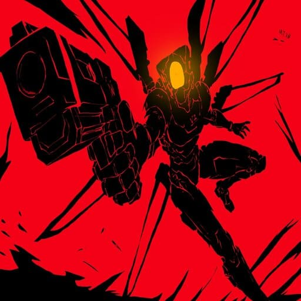

meu primeiro post
por: Lucas Detz
boas-vindas ao meu blog! aqui vou compartilhar dicas e curiosidades sobre jogos.
aqui vou compartilhar conhecimentos e curiosidades sobre jogos

por: Lucas Detz
boas-vindas ao meu blog! aqui vou compartilhar dicas e curiosidades sobre jogos.
por: Lucas Detz
O famoso impulso obtido ao rebater tiros com a espingarda (projectile boost) começou originalmente como um bug técnico devido a uma marcação incorreta nos projéteis, mas os desenvolvedores gostaram tanto que mantiveram e oficializaram a mecânica.